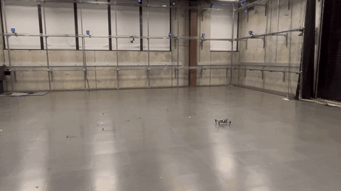
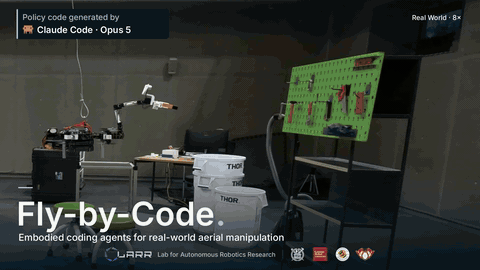
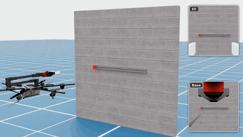
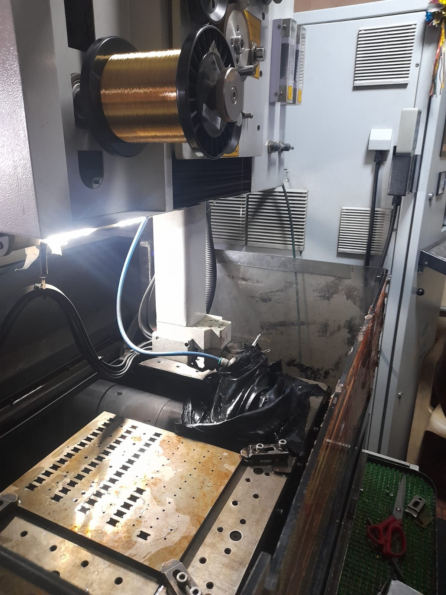
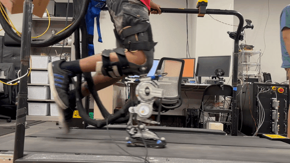
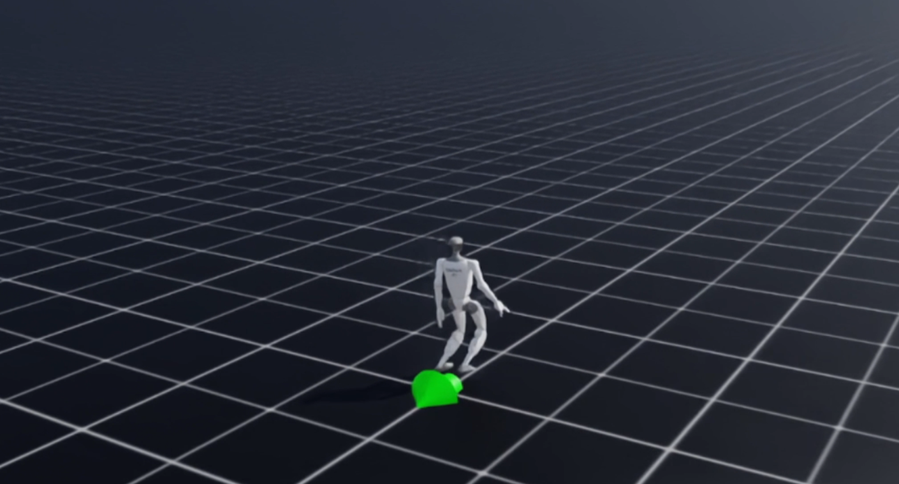
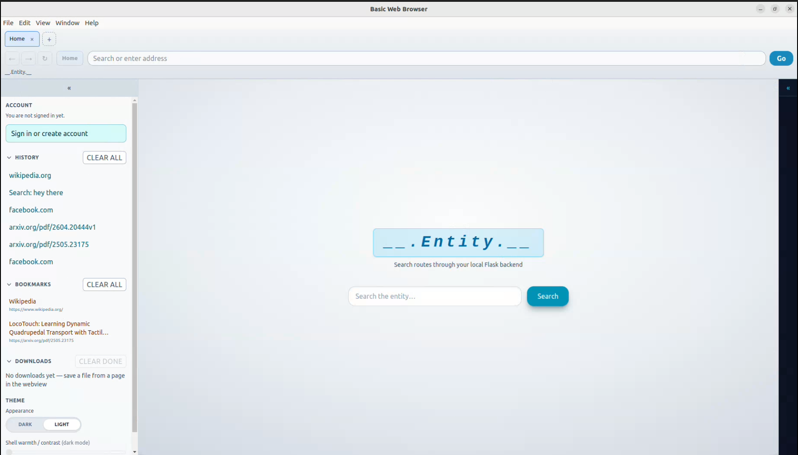
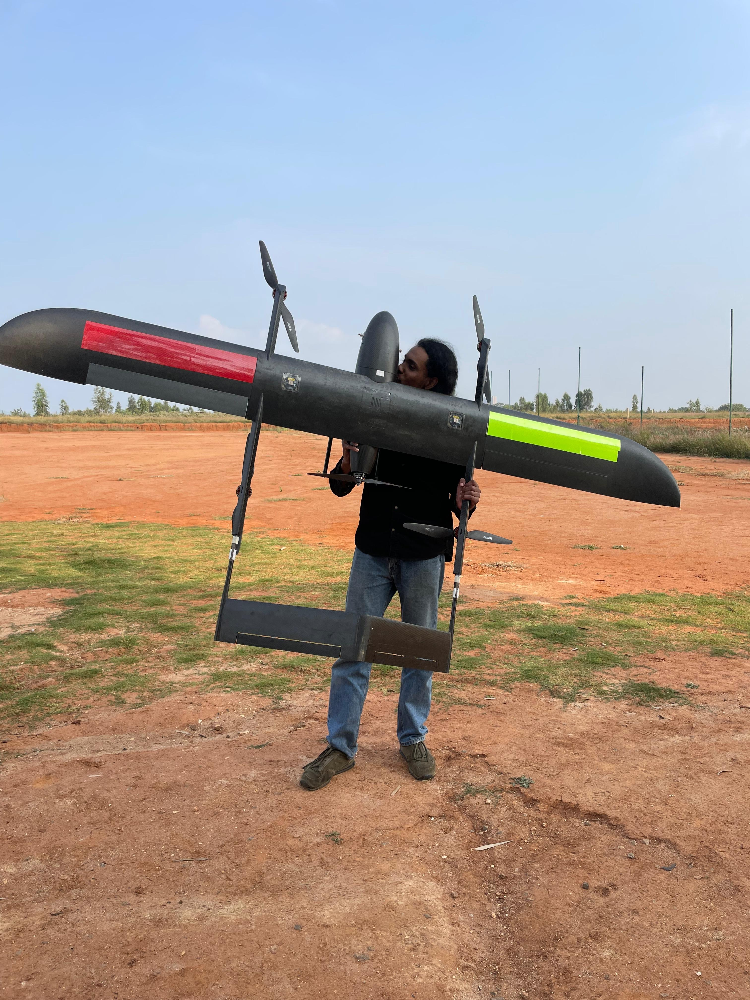
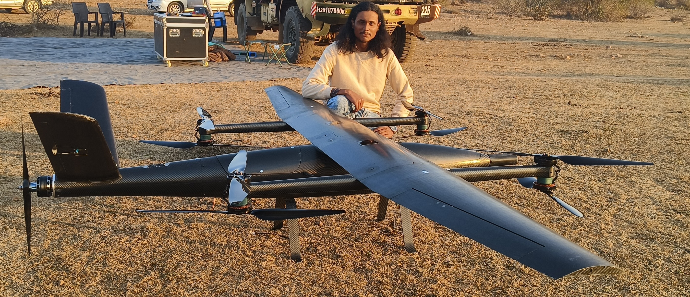

|
Bavin Saravanan I’m a Master’s student in Mechanical Engineering at Carnegie Mellon University and a research assistant at the CMU Robotics Institute, working in AirLab with Dr. Sebastian Scherer and in the Legged Systems Group with Dr. Hartmut Geyer. I focus on building intelligent autonomous systems that operate reliably in real-world environments. My work lies at the intersection of control theory and learning-based approaches, particularly reinforcement learning and multi-agent coordination, with an emphasis on safety, robustness, and decision-making under uncertainty. I’m especially interested in bridging the gap between theory and deployment, developing methods that not only perform well in simulation but can be transferred effectively to physical systems. This includes tackling challenges in autonomous navigation, system reliability, and scalable coordination among multiple agents. I hold a Bachelor's degree in Mechanical Engineering from SSN College of Engineering (Chennai, India). My foundation in robotics and control has been built through hands-on research and independent projects, shaping my approach to designing systems that are both principled and practical. |
Publications |
|
 |
Drone Soccer: Learning to Manipulate with Multicopter Downwash
Neelay Joglekar, Bavin Saravanan, Yutong Wang, Varun Kandiyappan, Junyi Geng, Sebastian Scherer IROS Workshop on Sim-to-Real and Classic Control, 2026 Uses multicopter downwash as an active manipulation tool: an RL policy trained on a simplified downwash model dribbles a soccer ball and transfers to real-world deployment. |
|
 |
Fly-by-Code: Embodied Coding Agents for Aerial Manipulation with Active Visual and Physical Feedback
Jeongyeon Seo, Sihyun Cho, Jaewoo Lee, Gyeongrak Choe, Yutong Wang, Bavin Saravanan, Jia-Bin Huang, Furong Huang, Sebastian Scherer, Guanya Shi, H. Jin Kim, Seungjae Lee, Dongjae Lee Under review, International Conference on Learning Representations (ICLR), 2027 A coding agent refines aerial manipulation programs using diagnostic programs that gather new camera views and targeted physical probes, completing 75% of simulated tasks and running on a real aerial manipulator. |
|
 |
A Modular Simulation Suite and Benchmark for Aerial Manipulation Policy Learning
Yutong Wang, Dongjae Lee, Xiaofeng Guo, Yuanzhu Zhan, Yufei Jiang, Bavin Saravanan, Muqing Cao, Jia Xie, Chenyang Mao, Sebastian Scherer, Junyi Geng, Guanya Shi Conference on Robot Learning (CoRL), 2026 AM-Bench: a modular benchmark for aerial manipulation across contact, transport, and constrained-interaction tasks, studying how embodiment, control, disturbances, and policy design interact. |
|
 |
Comparing Surface Characteristics of Cu-Al-Fe Alloys Using Thermal-Based Machining Processes
S. Santosh, Bavin Saravanan, T. S. Srivatsan Surface Engineering, vol. 40, no. 5, pp. 558-567, 2024 Compared EDM, powder-mixed EDM, and laser machining on Cu-Al-Fe shape memory alloy; PMEDM gave the lowest surface roughness. |
Projects |
|
 |
Learning-Based Prosthesis Control
Legged Systems Group, CMU RI | Jan 2026 - Present / video RL policy for the CMU prosthetic leg that combines human motion priors with the user's intact-leg femur pose to produce human-like gait through joint torque control. Next: anticipating gait-mode changes such as stairs and slopes. |
|
 |
General Loco-Manipulation on Unitree G1
Isaac Lab, PPO, VLM, RGB-D/LiDAR | Sept 2025 - Dec 2025 Modular perception–language–control stack: a VLM grounds open-vocabulary instructions in RGB-D/LiDAR scenes, and a PPO policy (29 DOF, Isaac Lab) transitions from navigation to manipulation. Transferred to the physical robot; grasping was limited by unmodeled contact dynamics. |
|
 |
AiRRo - RAG-Based Search Engine
React, Flask, nomic-embed, Llama | Jan 2026 - Mar 2026 / code Search engine that grounds Llama answers in documents retrieved from a custom SQLite vector store, reducing hallucination. Embedder, store, and LLM are independently swappable; outperformed keyword search on factual precision. |

|
SimpleRL - RL Algorithms from Scratch
PyTorch, Gymnasium, MuJoCo | Jul 2025 - Aug 2025 / code 9 RL algorithms implemented directly from the original papers (Q-Learning, DQN, Dueling Double DQN, REINFORCE, A2C, DDPG, PPO, SAC, TD3), each a single self-contained file. Evaluated on Ant, HalfCheetah, Hopper, and BipedalWalker. |
Experience |
Professional |
|
  |
Skytex Unmanned Aerial Solutions
AI and Robotics Engineer, Bengaluru, India | Jul 2023 - Jul 2025
|
Teaching |
|
This website is based on template at here. |